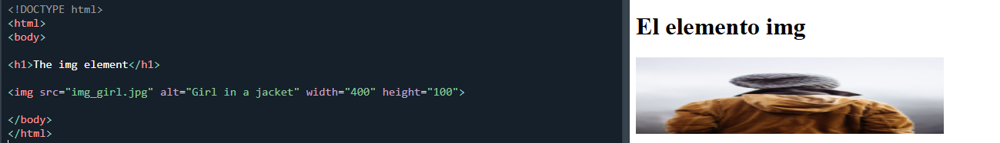
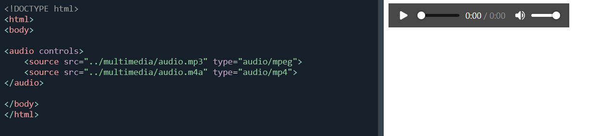
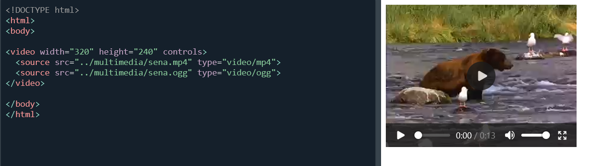

6. Etiquetas Multimedia
Elementos que permiten integrar contenido visual y auditivo dentro de una pagina web, haciendo la experiencia del usuario mas dinamica e interactiva.
Definicion
La etiqueta img se utiliza para mostrar imagenes dentro de una pagina web. Es una etiqueta vacia, lo que significa que no necesita etiqueta de cierre.
Las imagenes permiten complementar la informacion del sitio, mejorar la comprension del contenido y hacer la pagina mas atractiva visualmente.

<img src="imagen.jpg" alt="descripcion">
Atributos importantes
- src → ruta de la imagen.
- alt → descripcion de la imagen para accesibilidad.
- width / height → tamano de la imagen.
- loading → permite carga diferida (lazy loading).
Uso Adecuado
Las imagenes se utilizan para ilustrar informacion, mostrar productos, graficos, diagramas o cualquier recurso visual que ayude al usuario a comprender mejor el contenido.
- Siempre usar el atributo alt para accesibilidad.
- Optimizar el peso de las imagenes para mejorar la velocidad del sitio.
- Usar formatos adecuados como JPG, PNG o WebP.
Definicion
La etiqueta audio permite reproducir archivos de sonido directamente en el navegador sin necesidad de programas externos.
Se utiliza para integrar contenido como musica, narraciones, podcasts o efectos de sonido dentro de una pagina web.

<audio controls>
<source src="audio.mp3" type="audio/mpeg">
</audio>
Atributos importantes
- controls → muestra los controles de reproduccion.
- autoplay → reproduce el audio automaticamente.
- loop → repite el audio continuamente.
- muted → inicia el audio sin sonido.
Uso Adecuado
Es ideal para incluir contenido auditivo educativo, narraciones explicativas o material multimedia que complemente el texto.
- Ofrecer siempre controles al usuario.
- Evitar el uso de autoplay para no interrumpir la experiencia del usuario.
- Ofrecer varios formatos de audio para mayor compatibilidad.
Definicion
La etiqueta video permite insertar y reproducir contenido audiovisual directamente en el navegador.
Los videos son uno de los recursos mas utilizados para explicar procesos, mostrar tutoriales, presentaciones o contenido educativo.

<video controls>
<source src="video.mp4" type="video/mp4">
</video>
Atributos importantes
- controls → muestra controles de reproduccion.
- width / height → define el tamano del video.
- poster → imagen previa antes de reproducir el video.
- autoplay → inicia el video automaticamente.
- loop → repite el video.
Uso Adecuado
Se utiliza para mostrar contenido audiovisual como tutoriales, presentaciones, demostraciones de productos o material educativo.
- Usar siempre el atributo controls.
- Agregar una imagen poster para mejorar la presentacion.
- Comprimir el video para mejorar la velocidad de carga.
- Ofrecer mas de un formato para compatibilidad con diferentes navegadores.